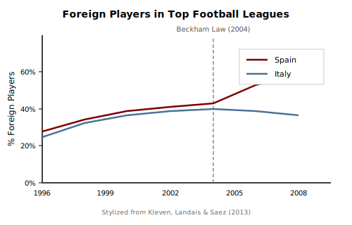
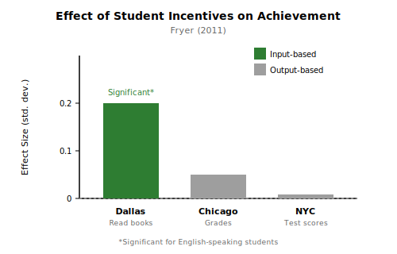

Incentives
Economics for Everyone
Recall our first principle
Economists believe that people optimize.
Optimization means people do their best given:
- Their preferences
- The constraints they face
Optimization also means people respond to incentives.
What is an incentive?
An incentive is anything that affects the payoffs of your choices.
Monetary incentives:
- Wages, prices, taxes, fines
Non-monetary incentives:
- Norms, reputation, emotions
- Convenience, effort, time
- Identity, social approval
Why incentives matter for policy
When you change incentives, people respond.
The impact of a policy change will almost always:
- Not be as if the world stood still
- Not be exactly what you predict
If you’re not careful, a policy might have the opposite effect of what you intended.
Key ideas for today
Behavioral response: Adjustments people make when incentives change
Strategic interactions: How others’ choices affect my incentives
Unintended consequences: When policies backfire due to unforeseen responses
Cognitive biases: Systematic departures from simple optimization
Thinking like an economist
Thinking like an economist means:
- Predicting behavioral responses before policy
- Measuring responses after policy
- Designing better incentives based on what you learn
Public Finance 101
How high should taxes be on the highest earners?
The naive view
Raise the tax rate a little…
…and you should collect more tax revenue.
But what might happen to the incomes of the highest earners?
Top marginal tax rates in the US

Labor supply and taxes
As wages rise, people face a tradeoff:
- Substitution effect: Higher wages make leisure more expensive → work more
- Income effect: Higher wages mean you can afford more leisure → work less
Which dominates? It depends.
A thought experiment
Suppose you’re in charge of tax policy.
You raise the top tax rate from 40% to 50%.
What happens to tax revenue?
The Laffer curve intuition

- At 0% tax: $0 revenue
- At 100% tax: $0 revenue (why work?)
- Somewhere in between: maximum revenue
The key insight
Revenue = Tax Rate × Tax Base
But the tax base is endogenous.
When rates rise, people may:
- Work fewer hours
- Shift income to other forms
- Move to other jurisdictions
- Engage in avoidance or evasion
What does the evidence say?
Best empirical estimates suggest behavioral responses are modest in the short run.
Saez, Slemrod & Giertz (2012):
- Elasticity of taxable income ≈ 0.25
- “Behavioral responses are not negligible, but not as large as some claim”
What does this imply for optimal rates?
The revenue-maximizing tax rate formula:
t* = 1 / (1 + e)
With e ≈ 0.25:
- t* = 1 / 1.25 = 80%
Current US top rate (~37%) is well below this.
Higher rates would still raise revenue—though with efficiency costs.
But some people are very responsive
European soccer players provide a striking example.
Kleven, Landais & Saez (2013) studied player mobility across 14 countries:
- Foreign players: elasticity ≈ 1.0 (highly responsive)
- Domestic players: elasticity ≈ 0.15 (less mobile)
Lower-tax countries attract the best talent.
Spain’s “Beckham Law”
In 2004, Spain cut tax rates for foreign workers from 43% to 24%.
The lesson
When people can move, tax incentives matter a lot.
- Foreign players: highly mobile → big response
- Domestic players: less mobile → small response
The size of behavioral responses depends on how easy it is to adjust.
An important clarification
This is not an argument against taxes.
It’s an argument that behavior matters.
Revenue effects depend on behavioral responses—we need to measure them.
A beautiful example
Strategic incentives
Let’s play a game
I’m going to collect a number from everyone in the class.
Your job: Guess what the class’s average guess will be, divided by two.
- Pick any number from 0 to 100
- If the class average is 50, the winning guess is 25
Submit your guess
[PollEverywhere QR code here]
Ready? Go!
Discussion
- What were your individual incentives?
- What’s the “best” response?
- What would perfectly rational players do?
Let’s play again
Now that you’ve thought about it…
[Play the game again]
A rewarding example?
Dynamic incentives
The $20 bill auction
Here’s a $20 bill. I’m going to auction it off.
Rules:
- Standard auction: highest bidder wins and pays their bid
- But: The second-highest bidder also pays their bid (and gets nothing)
We’ll start at $1 and go up by $1 increments.
Let’s play
Who wants to bid $1?
Discussion
Think about what happened:
- What were the strategic incentives at each point?
- How did past bids affect future incentives?
- What was the best approach from the start?
The key lesson
Each step was locally rational.
The outcome was globally terrible.
You don’t need irrational people to get insane outcomes—just the wrong rules.
Let’s play again
Knowing what you know now…
Unintended consequences
When good intentions backfire
The fundamental insight
As you can see, incentives are complicated.
The most fundamental reason policy is tricky:
People respond to the incentive itself, not your objective.
This isn’t about bad intentions
- People aren’t being malicious
- They’re just playing the game you set up
- The way they play depends on each other and their history
Goodhart’s Law
“When a measure becomes a target, it ceases to be a good measure.”
Examples:
- Teaching to the test
- Policing quotas
- Corporate KPIs
- Academic publishing (citations)
Soviet nail factory
A nail factory in Kuibyshev is given a production quota by number of nails.
. . .
What do you think happens?
. . .
Factory produced only tiny nails.

Soviet nail factory (continued)
The planners wise up. They switch to a quota by weight.
Now what happens?
Factory switched to producing only huge nails.
No one ever made medium nails.
Ban the box
Many jurisdictions “banned the box”—employers can’t ask about criminal history on initial applications.
Intended effect: Help people with records get jobs.
But think like an economist: What might employers do instead?
Ban the box (continued)
Employers, unable to screen on records, used race as a proxy.
Discrimination against Black applicants increased.
The policy backfired—for the very people it was meant to help.
The evidence: Agan & Starr (2018)
Field experiment: ~15,000 fictitious job applications in NJ and NYC
Before BTB (at companies with “the box”):
- White callback rate: 11.1%
- Black callback rate: 10.9%
- Gap: ~7% more callbacks for white applicants
After BTB (box removed):
- White callback rate: 14.8%
- Black callback rate: 10.3%
- Gap: ~43% more callbacks for white applicants
A policy question
You want students to learn more. You have money for incentives.
Option A: Pay students for good test scores
Option B: Pay students for reading books
Which would you choose? Why?
The tradeoff
Problem with paying for test scores (outputs):
- Students might not know how to improve
- May encourage cheating
- May distort effort toward test-taking skills
Paying for reading books (inputs):
- Students know exactly what to do
- Harder to game
- Builds the skill you actually want
Evidence from Fryer (2011)
Roland Fryer ran experiments in multiple cities:
Pay for actions students can control, not outcomes they can’t.
Cognitive biases
When responses aren’t what you’d predict
People don’t always respond “rationally”
A final complication: people don’t always respond to incentives the way a simple model predicts.
Economists have documented many cognitive or behavioral biases.
Inertia and defaults
When given choices, people tend to stick with the default option.
Example: 401(k) enrollment
- Opt-in default: ~50% participation
- Opt-out default: ~90% participation
Same options, very different outcomes.
Is this really a “bias”?
Important question: Why might people rationally stick with the default?
- Information costs (the default might be a good recommendation)
- Time costs (switching takes effort)
- Uncertainty (maybe the default-setter knows something)
Important to separate positive (what people do) from normative (what they should do).
Loss aversion
People feel losses more strongly than equivalent gains.
- Losing $100 feels worse than gaining $100 feels good
- Ratio is roughly 2:1
Implications:
- Framing matters (gains vs. losses)
- People may reject gambles that are favorable on average
- Status quo bias
Wrapping up
What we learned today
Incentives determine:
- What people try
- What they ignore
- What they distort
- How they adapt over time
The bottom line
Policies don’t operate on a fixed world—they change the world they operate on.
Thinking like an economist means recognizing this when you design and evaluate policy.
Looking ahead
Failing to account for behavioral responses can lead to disaster.
But doing so appropriately can be the key to managing everything—from your own life to the federal government.